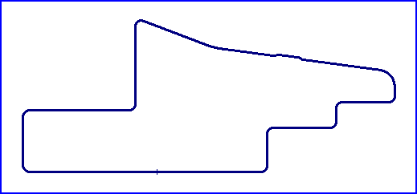

| Length | 1.600 Miles // 2.575 km |
| Direction | Clockwise |
Contact Information |
|
| Address |
Chrysler Classic Speed Festival |
| Telephone | +1 (1)619 2835808 |
| Website | http://www.coronadospeedfestival.com |
Coronado
Naval Air Station Circuit

| Length | 1.600 Miles // 2.575 km |
| Direction | Clockwise |
Contact Information |
|
| Address |
Chrysler Classic Speed Festival |
| Telephone | +1 (1)619 2835808 |
| Website | http://www.coronadospeedfestival.com |
Lasted Updated: 28 September 2003 17:15:18 GMT Daylight Time